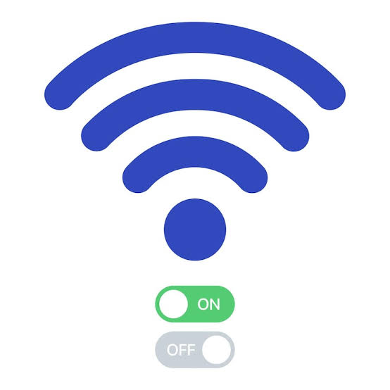

Sugerencias y Prevenciones
1- Acceder a una red solamente para entrar a la pagina y despues desconectarse de la red para minimizar el gasto de datos:
2- Se recomienda no reiniciara la pagina porque aparacera un mensaje sobre no tener concexión, simplemente dejen la pagina abierta sin reiniciar:

3- No comppartas tu numero de control con alguien mas, si lo haces alguien mas puede acceder a tu descubrimiento de fraternidad y no te dejara acceder: